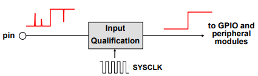
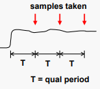
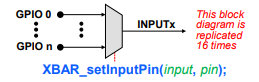
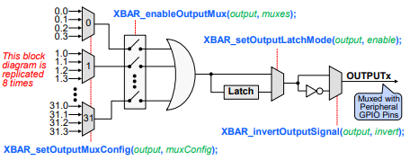

General Purpose Digital I/O#
The C2000 device incorporates a multiplexing scheme to enable each I/O pin to be configured as a GPIO pin or one of several peripheral I/O signals. Sharing a pin across multiple functions maximizes application flexibility while minimizing package size and cost.
A GPIO Group multiplexer and GPIO Index multiplexers provide a double layer of multiplexing to allow independent peripheral signals and the digital I/O function to share a single pin.
Note:
For multi-core devices, the peripheral multiplexing and pin assignment can only be configured by CPU1.
By default, all of the pins are configured as GPIO, and when configured as a signal input pin, a qualification sampling period can be specified to remove unwanted noise. Optionally, each pin has an internal pull up resistor that can be enabled in order to keep the input pin in a known state when no external signal is driving the pin.
Each device has a set number of ports, please refer to the ‘General-Purpose Input/Output (GPIO)’ section of the device’s Technical Reference Manual for more information. For a GPIO, each port has a series of registers that are used to control the value on the pins, and within these registers each bit corresponds to one GPIO pin.
If the pin is configured as GPIO, a direction (DIR) register is used to specify the pin as either an input or output. By default, all GPIO pins are inputs. The current state of a GPIO pin corresponds to a bit value in a data (DAT) register, regardless if the pin is configured as GPIO or a peripheral function. Writing to the DAT register bit field clears or sets the corresponding output latch, and if the pin is configured as an output, the pin will be driven either low or high. The state of various GPIO output pins on the same port can be easily modified using the SET, CLEAR, and TOGGLE registers. The advantage of using these registers is a single instruction can be used to modify only the pins specified without disturbing the other pins. This also eliminates any timing issues that may occur when writing directly to the data registers.
GPIO Input Qualification#
The input qualification scheme is very flexible, and the type of input qualification can be configured for a group of GPIO pins.
In the case of a GPIO input pin, the qualification can be specified as only synchronize to SYSCLKOUT (CPUx.SYSCLK for multi-core devices) or qualification by a sampling window.
For pins that are configured as peripheral inputs, the input can also be asynchronous in addition to synchronized to SYSCLKOUT (CPUx.SYSCLK for multi-core devices) or qualified by a sampling window.
The sampling period is specified by the qualification period (QUALPRDn) bits in the GPxCTRL register.


GPIO Input X-Bar#
The Input X-BAR is used to route external GPIO signals into the device. It has access to every GPIO pin, where each signal can be routed to any or multiple destinations which include the ADCs, eCAPs, ePWMs, Output X-BAR, and external interrupts. This provides additional flexibility above and beyond the multiplexing scheme implemented by the GPIO structure. Since the GPIO does not affect the Input X-BAR, it is possible to route the output of one peripheral to another, such as measuring the output of an ePWM with an eCAP for frequency testing.

GPIO Output X-Bar#
The Output X-BAR is used to route various internal signals out of the device. It contains outputs that are routed to the GPIO structure, where each output has one or multiple assigned pin positions, which are labeled as OUTPUTXBARx. Additionally, the Output X-BAR can select a single signal or logically OR signals.

AGPIO and AIOs#
AGPIO channels provide support for general purpose input/output capability on a subset of ADC channels. This feature provides the ability to have full GPIO functionality and certain peripheral access on these ADC channels.
AGPIO pins have additional functionality compared to AIO pins. AIO pins are “input only” for their digital functionality, while AGPIO pins are capable of digital input and output.
In order to configure AGPIOs, the AGPIOCTRLx.GPIOy register bits must be set to 1 for the given port (x) and GPIO (y). This enables (or “unlocks”) the use of the GPxAMSEL.GPIOy register bit.
The GPxAMSEL.GPIOy register bit can then be used to select analog functionality (1, default) or GPIO functionality (0). When analog functionality is enabled, GPIO functionality is disabled. When GPIO functionality is enabled, analog functionality is disabled.
Refer to the ‘Analog Pins and Internal Connections’ table within the Technical Reference Manual for more information on the grouping of pins.
Resources#
Feedback
Please provide any feedback you may have about the content within C2000 Academy to: c2000_academy_feedback@list.ti.com